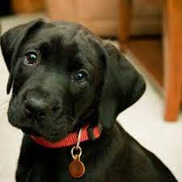

PetSac

Objetivos
-Rescate y seguridad animal.
-Desarrollo de collares especiales con códigos QR.
-Tecnología de escaneo avanzada.
-Colaboración con organizaciones y comunidades.
-Educación y concienciación sobre la seguridad animal.
Síguenos en redes sociales